Exercices DC⚓︎
Exercice 1 - Bibliothèque⚓︎
Nous souhaitons gérer une bibliothèque simple. Nous recenserons une liste d'ouvrages, avec pour chacun le titre et l'auteur (éventuellement plusieurs).
On tiendra compte du fait que des ouvrages peuvent exister en plusieurs exemplaires, certains pouvant ne pas être disponibles pour le prêt (consultables uniquement sur place, ou détruits).
Une liste d'adhérents devra être tenue à jour, les adhésions devant se renouveler une fois par an. Il devra être possible de vérifier qu'une adhésion est à jour (c'est-à-dire qu'elle a été renouvelée il y a moins d'un an), mais il ne sera pas nécessaire de connaître l'historique des renouvellements.
Les adhérents peuvent emprunter jusqu'à 5 livres simultanément et chaque livre emprunté doit être retourné dans les deux semaines. On devra conserver un historique permettant de savoir quel abonné a emprunté quels livres, les dates d'emprunts et de retours.
correction
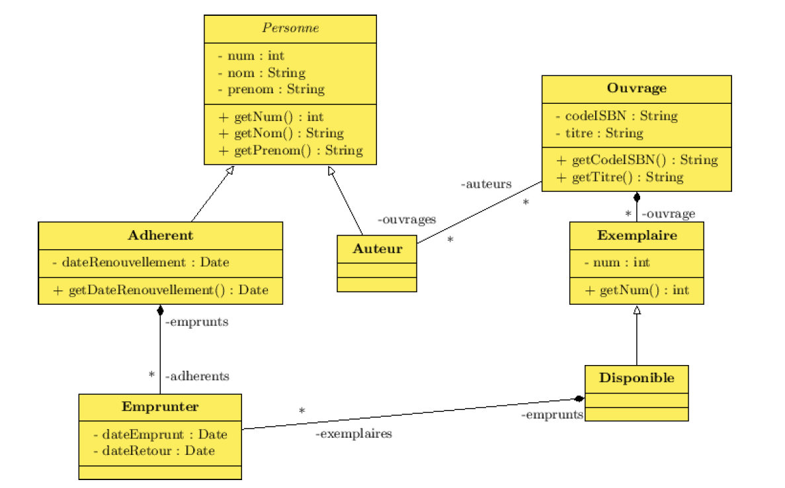
Exercice 2 - Comptes en banque⚓︎
Nous souhaitons gérer des comptes en banque.
Une liste de comptes, avec numéro et libellé doit être tenue à jour. On souhaitera connaître pour chacun d'eux l'identité du propriétaire du compte (sachant qu'un compte peut dans certains cas appartenir à plusieurs personnes). Pour chaque compte, on conservera l'historique des modifications (virement, retrait, dépôt). On considérera comme un virement tout opération impliquant deux comptes et comme des retraits (ou dépôts) toute opération n'impliquant qu'un seul compte.
correction
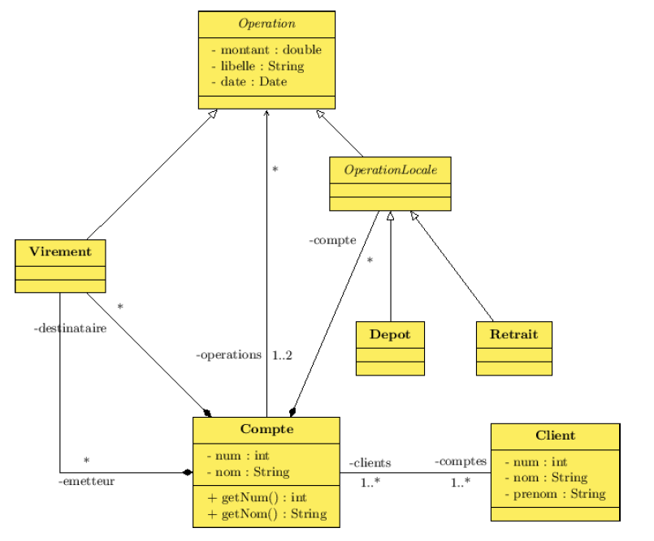
Exercice 3 - Inscriptions sportives⚓︎
Une ligue sportive souhaite informatiser les inscriptions à des compétitions.
Chaque compétition porte un nom et une date de clôture des inscriptions. Selon les compétitions, les candidats peuvent se présenter seul ou en équipe, sachant que le détail des équipes (liste des candidats et entraîneur) devra aussi être géré.
correction
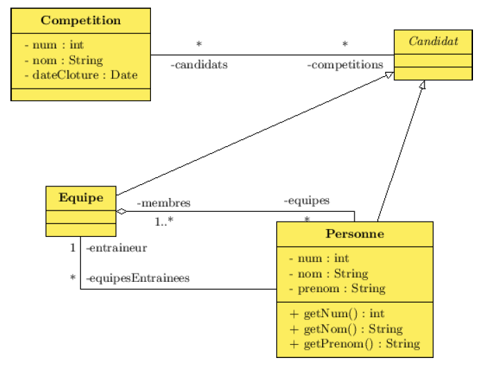
Exercice 4 - CMS⚓︎
Nous souhaitons gérer un CMS (content management system).
Un CMS est un logiciel permettant de gérer le contenu d'un ou plusieurs sites web. Chaque site porte un nom, est caractérisé par une URL, et est découpé en catégories, imbricables les unes dans les autres. Des utilisateurs sont répertoriés dans le CMS, et chacun peut avoir le droit (ou non) d'écrire dans un site web.
Chaque utilisateur doit avoir la possibilité de publier des articles (ou des brèves) dans une catégorie d'un site web (pourvu qu'il dispose de droits suffisants dessus). Une brève est composée d'un titre et d'un contenu textuel. Un article, en plus de son titre et de son texte d'introduction, est constitué de chapitres portant chacun un nom et contenant un texte. Il va de soi qu'on doit avoir la possibilité pour chaque site de conserver l'historique de quel article (ou brève) a été publié par quel utilisateur.
Réalisez un diagramme de classes modélisant cette situation.
correction
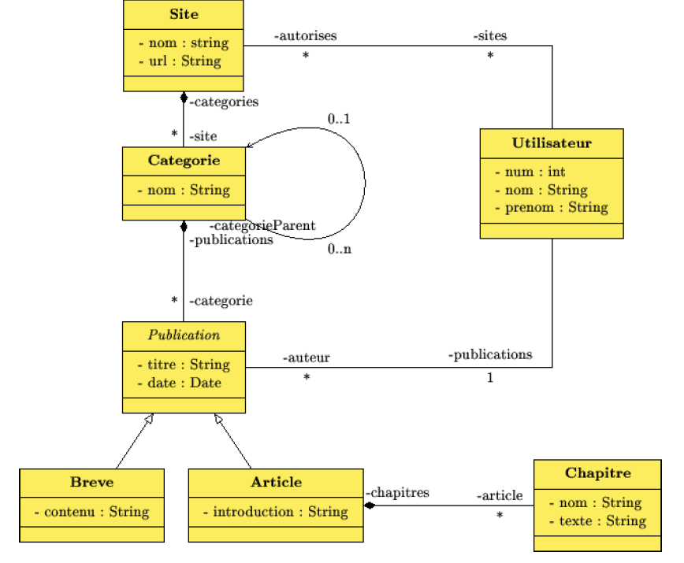
Exercice 5 : Gestion des résultats au parcours du combattant⚓︎
Une caserne militaire désire gérer les résultats des soldats lors du passage des obstacles du parcours du combattant. Dans sa carrière, un soldat va passer plusieurs fois le parcours du combattant.
A chaque fois qu’un soldat passe un obstacle, un instructeur lui attribue une note (note instructeur). Si le parcours comporte 20 obstacles, l’élève recevra donc 20 notes (si l’élève ne passe pas l’obstacle, la note 0 lui est attribuée).
A chaque obstacle est attribué un niveau de difficulté. (facile , moyen, difficile …).
Un bonus de points est ensuite attribué à chaque niveau (ex : bonus de 2 points pour les obstacles difficiles).
La note finale pour le passage d’un obstacle est donc égale à : note attribuée par l’instructeur + bonus relatif à la difficulté de l’obstacle.
Enfin, une note minimale à obtenir est définie pour chaque obstacle. Elle définit un niveau minimum à atteindre qui permet de dire à un soldat sur quels obstacles il doit axer en priorité son entraînement.
Exemple : soit l’obstacle « Fosse » de niveau « difficile » (le bonus attribué pour ce niveau est de 2 points). La note minimale à atteindre pour cet obstacle est de 10.
Si un élève est noté 6 sur cet obstacle par l’instructeur, sa note finale sera égale à \(6 + 2 = 8\). On juge donc que son niveau sur cet obstacle est insuffisant et qu’il lui faut parfaire son entraînement.
Les responsables de la caserne souhaitent obtenir la liste de tous les obstacles ainsi que leur niveau de difficulté.
Ils souhaitent également obtenir la liste de toutes les notes attribuées sur chacun des obstacles.
Enfin, ils désirent avoir le récapitulatif des notes obtenues par un soldat donné pour retracer sa progression, ainsi que le temps total qu’il a mis pour effectuer un parcours complet (ainsi que les temps intermédiaires).
correction
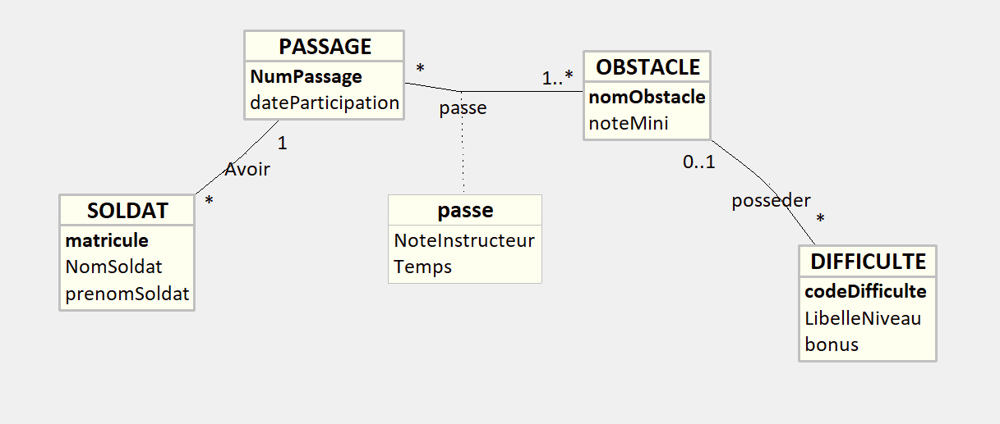
SOLDAT(matricule, nom, prenom)
PASSAGE(NumPassage, dateParticipation, #matricule)
PASSE(#NumPassage , #nomObstacle, noteInstructeur, Temps)
OBSTACLE(nomObstacle, noteMini, #codeDifficulte)
DIFFCICULTE(codeDifficulte, libelleDifficulte, bonus)
Exercice 6 : Gestion des logements dans une agence immobilière⚓︎
Une agence de location de maisons et d’appartements désire gérer sa liste de logements. Elle voudrait en effet connaître l’implantation de chaque logement (nom de la commune et du quartier) ainsi que les personnes qui les occupent (les signataires uniquement). Le loyer dépend d’un logement, mais en fonction de son type (maison, studio, T1, T2...) l’agence facturera toujours en plus du loyer la même somme forfaitaire à ses clients. Par exemple, le prix d’un studio sera toujours égal au prix du loyer + 30 € de charges forfaitaires par mois. Pour chaque logement, on veut disposer également de l’adresse, de la superficie ainsi que du loyer. Quant aux individus qui occupent les logements (les signataires du contrat uniquement), on se contentera de leurs noms, prénoms, date de naissance et numéro de téléphone. Pour chaque commune, on désire connaître le nombre d’habitants ainsi que la distance séparant la commune de l’agence.
NB : on ne gérera pas l’historique de l’occupation des logements par les individus. On considèrera de plus qu’un individu ne peut être signataire que d’un seul contrat.
Etablir :
- Le dictionnaire des données et énoncer les règles de gestion établis
- Le modèle conceptuel des données
- Le modèle logique associé
correction
| Nom | Commentaires | Entité | Type | Identifiant |
|---|---|---|---|---|
| Id commune | Numéro artificiel | COMMUNE | entier | Oui |
| Nom Commune | - | COMMUNE | varchar(45) | Non |
| DistanceAgence | Distance moyenne d'une ville par rapport à l'agence | COMMUNE | float | Non |
| Nb habitants | - | COMMUNE | float | Non |
| NumIdentification | Numéro artificiel | INDIVIDU | entier | Oui |
| Nom | - | INDIVIDU | varchar(35) | Non |
| Prenom | - | INDIVIDU | varchar(30) | Non |
| DateNaissance | - | INDIVIDU | date | Non |
| NumTelephone | - | INDIVIDU | varchar(12) | Non |
| NumLogement | Numéro artificiel | LOGEMENT | entier | Oui |
| Adresse | - | LOGEMENT | varchar(50) | Non |
| Superficie | - | LOGEMENT | entier | Non |
| Loyer | - | LOGEMENT | float | Non |
| IdQuartier | Numéro artificiel | QUARTIER | entier | Oui |
| LibelleQuartier | - | LOGEMENT | varchar(35) | Non |
| TypeLogement | Classifie le logemùent en fonction du nb de piece (T1, T2, ...) | TYPE LOGEMENT | varchar(25) | Oui |
| chargesforfaitaires | Montant forfaitaire appliqué en fonction du nb de pieces | TYPE LOGEMENT | float | Non |
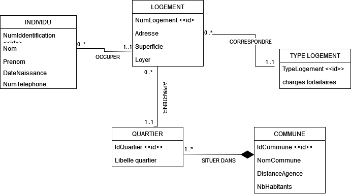
LOGEMENT (numLogement, adresse, superficie, loyer, #typeLogement, #idQuartier)
INDIVIDU (nulIdentification, nom, prenom, dateNaissance, numTelephone, #numLogement)
TYPELOGEMENT(typeLogement, chargesForfaitaires)
QUARTIER (IdQuartier, LibelleQuartier, #IdCommune)
COMMUNE (IdCommune, nomCommune, distanceAgence, NbHabitants)
Exercice 7 : Gestion des courses hippiques⚓︎
On désire gérer les participations des divers chevaux et jockeys aux courses hippiques : connaître les participants d’une course et leur classement. Une course se déroule toujours sur le même champ de course et appartient toujours à la même catégorie (exemple de catégorie : trot attelé, trot monté, obstacle …). On désire connaître les catégories de course qu’un champ de course peut accueillir. On désire de plus gérer les informations suivantes :
- la désignation de la course (ex : prix d’Amérique)
- le nom du champ de course
- le nombre de places dans les tribunes
- la date de la course (cette date est variable)
- la dotation de la course en euros (cette dotation est variable)
- le nom des chevaux
- le nom et le prénom du propriétaire (on supposera qu’il n’y en a qu’un et on ne gérera pas l’historique)
- le sexe du cheval
- le nom et prénom des jockeys
- la date de naissance de chaque cheval.
- le numéro de dossard du jockey et du cheval pour la course
NB : on désire de plus gérer les liens de parenté directs entre les chevaux.
Une même course peut avoir lieu plusieurs fois dans la même saison sur le même champ de course et les dotations ne sont pas toujours les mêmes. Ex : le trot monté d’Auteuil se déroule au mois de mars avec une dotation de 5 millions, au mois de juillet avec une dotation de 3 millions et au mois de décembre avec une dotation de 4 millions.
Le modèle conceptuel des données
Le modèle logique (MPD) associé
correction
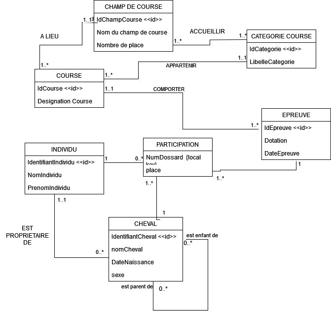
CHAMPCOURSE (idChampCourse, nomChampCourse, nbPlaces)
CATEGORIE_CHAMP_COURSE (idChampCourse, id_categorie)
CATEGORIE_COURSE (idCategorie, categorie)
COURSE (idCourse, designationCourse, #idChampCourse, #idCategorie)
EPREUVE (idEpreuve, dotation, dateEpreuve, #idCourse)
INDIVIDU (idIndividu, nomIndividu, prenomIndividu)
PARTICIPER (idepreuve, idIndividu, idCheval, numDossard, place)
CHEVAL (idCheval, nomCheval, dateNaissance, sexe, #idIndividu)
EST_PARENT_DE (#idChevalparent, #idChevalEnfant)
Exercice 8 : Hôtel⚓︎
Un hôtel est composé d'au moins deux chambres. Chaque chambre dispose d'une salle d'eau : douche ou bien baignoire. Un hôtel héberge des personnes. Il peut employer du personnel et est impérativement dirigé par un directeur. On ne connaît que le nom et le prénom des employés, des directeurs et des occupants. Certaines personnes sont des enfants et d'autres des adultes (faire travailler des enfants est interdit). Un hôtel a les caractéristiques suivantes : une adresse, un nombre de pièces et une catégorie. Une chambre est caractérisé par le nombre de lit qu'elle contient, son prix et son numéro. On veut pouvoir savoir qui occupe quelle chambre et à quelle date. Pour chaque jour de l'année, on veut pouvoir calculer le loyer de chaque chambre en fonction de son prix et de son occupation (le loyer est nul si la chambre est inoccupée). La somme de ces loyers permet de calculer le chiffre d'affaires de l'hôtel entre deux dates.
Donnez un diagramme de classe pour modéliser le probléme de l'hôtel
Correction
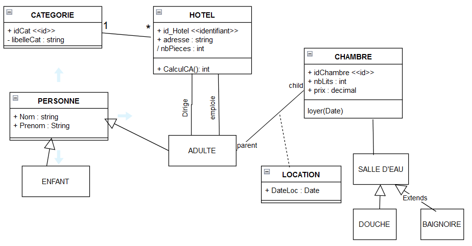
Exercice 9 : Asso35⚓︎

Asso35 est une association dont les membres, regroupés en équipe, pratiquent des activités. Chaque équipe est le plus souvent ludique ou sportive.
Les équipes sportives peuvent être amatrice ou licenciée du sport qu'elles pratiquent par la fédération concernée. Dans ce cas, certaines d'entre elles peuvent participer à une compétition dont on connaît un descriptif, sa catégorie (nationale, régionale ou départementale) et le classement de l'équipe. L'historique d'une équipe pour une compétition n'est pas à archiver, seule compte l'année en cours.
On ne gère pas les licences individuelles de chaque adhérent. Pour chaque sport, on souhaite savoir si un avis médical est nécessaire.
Toutes les équipes sportives sont entraînées par un adhérent qui peut gérer plusieurs équipes.
Une fiche repère les adhérents de l'association par leur nom, leur prénom, leurs coordonnées, leur date de naissance et les coordonnées de leur médecin traitant. Pour les hommes, on note leur situation militaire (accompli, exempté ou sursitaire), pour les femmes, on référence les périodes d'interruption des activités dues à leurs maternités, numérotées séquentiellement par rapport au membre.
Les équipes ludiques peuvent jouer à plusieurs jeux.
Un adhérent peut pratiquer plusieurs activités.
Donnez un diagramme de classe pour modéliser la gestion de l'association
Correction
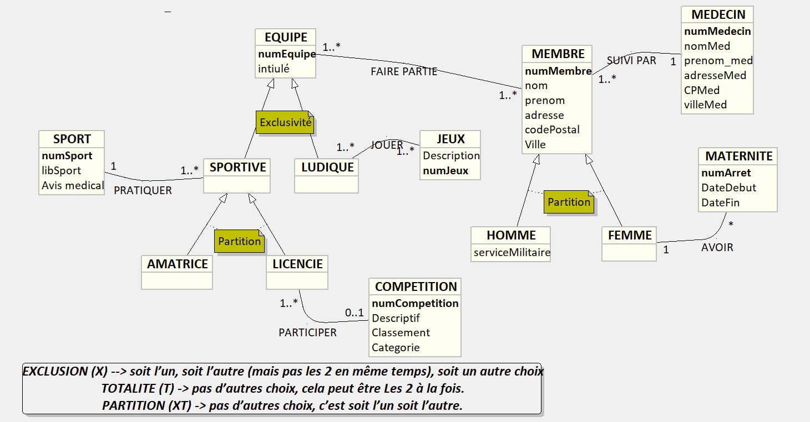
Exercice 10 : Etude d'un système de réservation de train⚓︎
Cette étude de cas concerne un système simplifié de réservation de train pour une agence de voyage. Les rencontres avec les futurs utilisateurs et les experts ont permis de résumer la connaissance du domaine avec les phrases suivantes :
- des compagnies proposent différents trains
- un train est ouvert à la réservation et refermé sur ordre de la compagnie
- un client peut réserver un ou plusieurs trains pour des passagers différents
- une réservation concerne un seul train et un seul passager
- une réservation peut-être annulée ou confirmée
- un train a une gare de départ ou une gare d'arrivée
- un train a un jour et une heure de départ, et un jour et une heure d'arrivée
- un train peut comporter des arrêts dans des gares
- un arrêt a une heure d'arrivée et une heure de départ
- chaque gare dessert une ou plusieurs villes
À partir de ces informations, réaliser par étapes, un modèle statique du domaine. N'hésitez pas à revenir en arrière si certaines étapes vous apportent des éléments ou contraintes supplémentaires.
Etape 1 : Modélisation des phrases 1 et 2
- Réaliser le diagramme de classe représentant la phrase 1
- La phrase 2 permet de préciser un peu plus ce diagramme. Pour cela, appuyez-vous sur un diagramme de collaboration illustrant cette phrase.
Correction
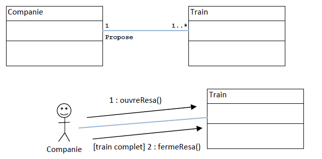
Etape 2 : Modélisation des phrases 6, 7 et 10
Dans la phrase 7, les dates et heures représentent uniquement des valeurs. Dans la phrase 6, la notion de gare est plus complexe, une gare possède un nom, dessert plusieurs villes…
- Poursuivre la modélisation de la classe train en se rapportant à la phrase 7
- Poursuivre l'élaboration du diagramme de classe en interprétant la phrase 6. Les gares de départ et d'arrivée ont-elles des attributs et méthodes différents ou jouent-elles des rôles différents ?
- Modéliser la phrase 10 en réfléchissant au cardinalités.
Correction
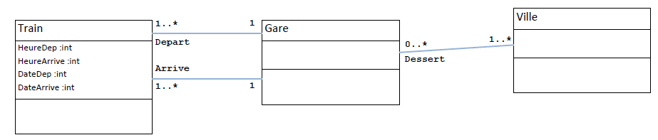
Etape 3 : Modélisation des phrases 8 et 9
Ces deux phrases amène des précisions sur les arrêts, mais restent trop vagues. Essayer d'obtenir plus de précisions en vous appuyant sur un cas concret.
- Établir le diagramme d'objet décrivant les cas réels suivants : le train TGV_Marseille_Paris part de la gare Saint-Charles, fait un arrêt à Aix-en-Provence à la gare de l'Arbois, et arrive à Paris en gare de Lyon; le train TGV_Marseille_Bruxelles part de la gare Saint-Charles, fait un arrêt à Aix-en-Provence à la gare de l'Arbois, un autre arrêt à Paris en gare de Lyon, et arrive à Bruxelles en gare Centrale.
- À l'aide de ce diagramme d'objet, modéliser les phrases 8 et 9.
Correction
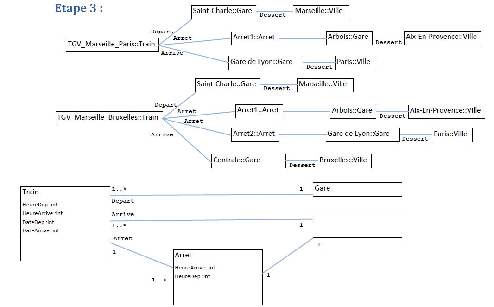
Etape 4 : Modélisation des phrases 3, 4 et 5
Modéliser le concept de réservation.
Correction
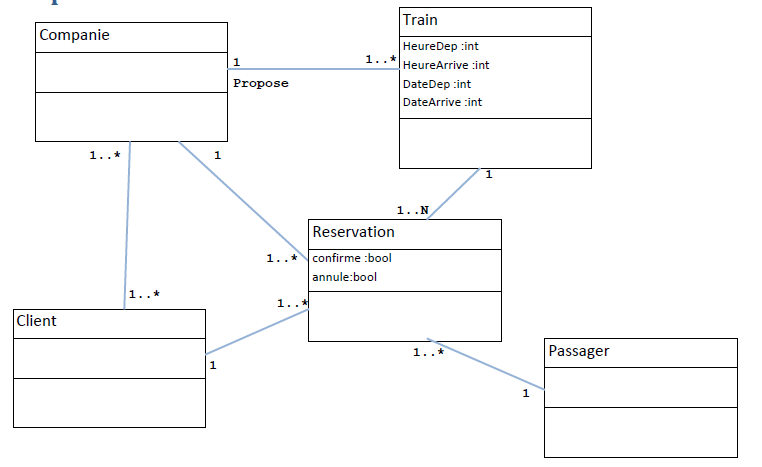
Etape 5 : Ajouter les attributs nécessaires.
On ne doit pas lister dans les attributs des références à d'autres classes : c'est le but même de l'identification des associations.
- une gare a un nom
- un client possède un nom, un prénom, une adresse et un numéro de téléphone
- une compagnie a un nom
- un arrêt et lié à une heure de départ et une heure d'arrivée dans un trajet
- un passager a un nom et un prénom
- une ville a un nom
- un train a un numéro, une date de départ et d'arrivée, une heure de départ et d'arrivée.
Correction
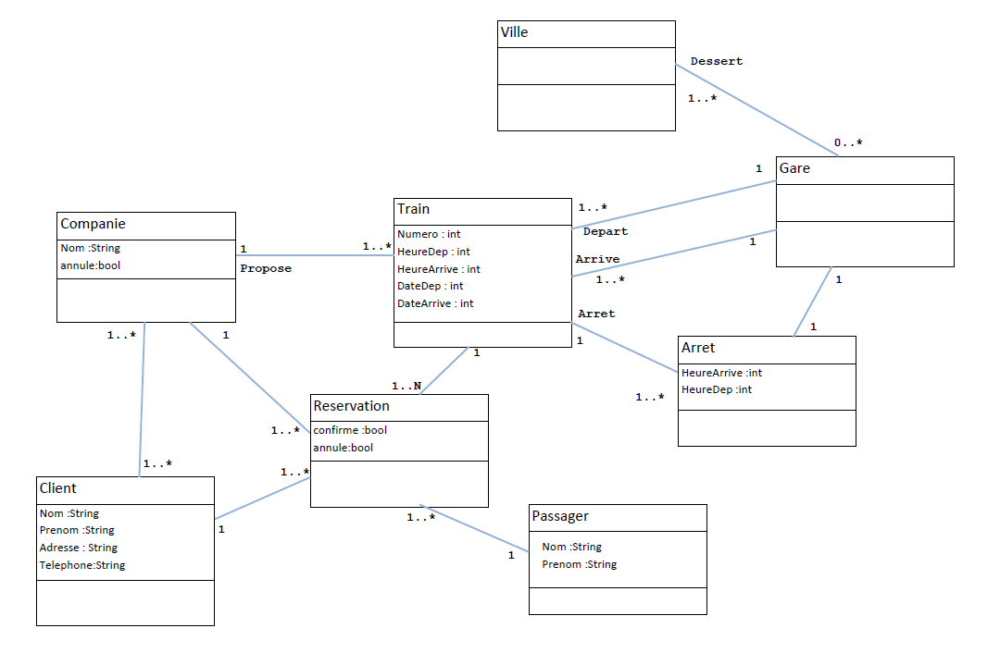